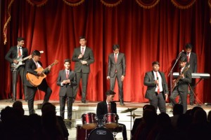

La Martiniere College
Crest
Houses
Uniform
Picture Gallery
Author
About La Martiniere College, Lucknow
La Martiniere College, Lucknow, established in 1845, was founded in accordance with the Will of Major General
Claude Martin. Born in Lyon, France, in 1735, the Founder died in Lucknow on 13 September, 1800.
The day of his death, by his own instructions is commemorated as ‘Founder’s Day’.
Under his Will, certain funds were allotted for the establishment of schools at Lyon, his birth place in France,
in Calcutta and at Lucknow.
Today, La Martiniere College imparts instruction through the medium of English and admission to the College
is eagerly sought. Over the span of one and a half centuries, the College has produced soldiers, sailors
and airmen who have done the school and their country proud in the two World Wars and in the wars of
Independent India. It has also produced engineers, doctors, educationists, administrators and outstanding
sportsmen, now scattered over the globe. It counts among its illustrious alumni, men of War and Peace
– the Keelor brothers awarded with the Vir Chakra, for shooting down Sabre jets in the
Indo-Pak War (1965) and the Nobel Peace Laureate, Dr Rajendra Pachauri.
On 01 October, 1995, the one hundred and fiftieth anniversary of the opening of the College, the President of India,
acknowledged the contribution of the College by releasing a postage stamp of the denomination of Rs 2.00, as a mark
of honour. This, again, is a mark of distinction that only a few other institutions in India enjoy.
College Crest & House Logos
CLAUDE MARTIN'S COAT OF ARMS
Claude Martin designed his own coat of arms. The escutcheon or central shield bears charges or
emblems, which epitomise his career. The escutcheon is supported by seven standards bearing the
motif of the fish.
The device of the sailing ship represents the nautical influences in Claude Martin's career – his
voyage from France to India, the events related to his travel from Pondicherry to Calcutta over
the Bay of Bengal.
In the centre of the shield is the lion rampant with the pennant. This is similar to one of the lions
on the coat of arms of the East India Company.
The rock symbolizes the establishment and foundation of his fortunes. The East India Company
lion stands upon this rock. It was as an officer of the Company that Claude Martin made his
fortune.
The castellated building is a device that represents Constantia, his final architectural achievement
that had an overpowering role in his latter years.
The sun setting behind Constantia reflects the sunset of his days.
The supporters on each side of the escutcheon are made up of three standards on the left and four
standards on the right. Each bears the motif of the fish. The seven standards were part of the
armorial bearing of the Nawabs of Oudh and could only have been used with the permission of
Nawab Asaf-ud-Daula.
The dominant tinctures are gold and azure (blue). The College colours are Navy Blue and Old
Gold.
Claude Martin's personal motto, the Latin, Labore et Constantia on a scroll below the
escutcheon and supporters completes the picture. This is also the motto of all La Martiniere
schools, which exhorts its pupils to Labour and Constancy.
-
CORNWALLIS HOUSE
Inspiration : Charles Cornwallis, 2nd Earl Cornwallis to whom Claude Martin
Served as aide-de-camp during the Third Anglo-Mysore War.
Colour : Green
Motto : Never Give In
Description : The shield depicts an image of The Lord Cornwallis cannon, cast
by Claude Martin in the Lucknow Arsenal in 1796 and the central
feature on the East Terrace of Constantia. The cannon is
emblazoned on an escutcheon with diagonals of Blue and Gold
stripes, now the College colours. At the top of the shield is a
helmet with a visor crowned with the Earl's coronet. Two fish, the
emblem of Oudh used in the Coat of Arms of Claude Martin
support the escutcheon on either side. At the bottom of the shield
is the House motto ‘Never Give In’.
HODSON HOUSE
Inspiration : Brevet Major William Stephen Raikes Hodson (1821 – 1858) was
a British leader of irregular light cavalry who raised the Cavalry
regiment known as Hodson's Horse. It exists today as the 4th Horse
Regiment, an armoured regiment in the Indian Army. Hodson is
buried on La Martiniere Estate.
Hodson has the distinction of equipping his regiment in khaki
colour uniform, which is considered the precursor of modern
camouflage uniform. The tradition of the khaki uniform continues
as the summer uniform in La Martiniere College, Lucknow.
Colour : Red
Motto : Do or Die
Description : The shield depicts images of horse heads and crossed swords
reflecting the contribution of Brevet Major William Stephen
Raikes Hodson who raised the eponymous cavalry regiment. At
the bottom of the shield is the House motto ‘Do or Die’.
LYONS HOUSE
Inspiration : The city of Lyon, France, the birthplace of the Founder, Major
General Claude Martin on 4 January 1735. Claude Martin left
instructions in his Will for schools to be established in Lucknow,
Kolkata and Lyon. Today, there are three La Martiniere
establishments in the city of Lyon: La Martinière Monplaisir, La
Martinière Duchère, and La Martinière Terreaux.
Colour : Yellow
Motto : To the End
Description : The shield depicts a lion rampant, which is the central image of the
Coat of Arms and flag of the city of Lyon. The lion rampant
symbolizes the virtues of bravery, valour, strength and royalty. At
the bottom of the shield is the House motto ‘To The End’.
MARTIN HOUSE
Inspiration : The Founder - Major General Claude Martin (4 January 1735 – 13
September 1800). Major General Claude Martin was an officer in
the French, and later the British East India Company's Bengal
Army. Born into a humble background, he rose to the position of
Major General. He was a self-made man who left a lasting legacy
in the educational institutions he founded posthumously in
Lucknow, Kolkata and Lyon.
Colour : Blue
Motto : Nil Desperandum
Description : The shield depicts a sail ship, which is also a device in the Coat of
Arms of the Founder. The ship recalls the nautical exploits of
Major General Claude Martin, which includes his voyage to India
and his journey in the Fateh Bahadur in the Bay of Bengal. The
Great Bell, also called the Martin Bell, now placed on the East
Terrace of Constantia is at the top of the shield. Laurel leaves in a
horseshoe shape frame the image of the ship, as a symbol of martial
victory. At the bottom of the shield is the House motto ‘Nil
Desperandum’, Latin for Never Despair.
The Romance of Khaki
One of the distinctive features of La Martiniere College, Lucknow is the College uniform,
worn by its pupils in summer. Khaki is ubiquitous and associated exclusively with the boys of this College.
Khaki uniform was introduced at La Martiniere College following the events of 1857
. Its use is attributed to the pivotal, though controversial character, in the events of the sacking
of Lucknow in 1857- Brevet Major W. S. R. Hodson who lies buried on La Martiniere estate.
Khaki, as a colour and material for uniform was first worn by the Corps of Guides that was raised in December 1846
as the brain-child of Sir Henry Lawrence, who later served as the British Resident at Lucknow during the events of 1857.
Lawrence chose Sir Harry Lumsden as the Commandant of the Corps and William Stephen Raikes Hodson as its
adjutant and second-in-command to begin the process of raising the Corps of Guides.
Significantly, Hodson was given the task of designing the uniform and clothing the men. This was years before
it became the uniform of the British Army. In May 1848 he liaised with his brother Rev. George Hodson,
in England, to send the cloth, rifles and Prussian-style helmets required for his men. With Lumsden’s approval,
Hodson decided upon a lightweight uniform of Khaki colour – or ‘drab’ as it was then referred to. This would be
comfortable to wear and ‘make them invisible in a land of dust’. As a result Hodson and Lumsden have the joint
distinction of being the first officers to equip a regiment dressed in Khaki, which many view as the precursor
of modern camouflage uniform.
For years, the tailoring of khaki uniform for the pupils of the College followed the pattern of the uniform
used by Hodson’s troops. This included the Prussian-style helmets which were gradually replaced by cane helmets
and solar-topis. Changes in style were introduced closer to the Second World War. The military character of the
College was gradually being replaced as a College for gentlemen. Neckties were introduced and the cumbersome
solar-topis were abandoned.
The colour of the uniform remains unchanged. There are changes in design to accommodate modern tailoring patterns.
Absorbent, cellular cotton cloth has now been replaced by the easier to maintain terrycot. Khaki uniform continues
proudly worn by all boys.
A recent tradition is for the school leaving class to autograph the uniform of batch-mates and to include
personalised messages in nostalgic memory.
Picture Gallery
N.C.C.
|
|
|
|
|
 |
|
|
|
|
|
|
On Stage Programs
|
|
|
 |
|
|
|
|
|
|
 |
 |
About Author
Urdhav Singh is a student of La Martiniere College who has keen interest and knowledge not only about
the monumnental legacy of constania but it's generation/era legacy as well. He believes that martinians have the
most legacy, self-esteem and pride in their college name as well as college years in comparison to other schools all
over India. He wanted to restore the fading legacy of martinians when covid-19 hit and made that next to impossible.
He is a staunch believer in extreme self-discipline and 24-hour productivity. He was a part of a lot of
co-curricular activities before the pandemic made its way. Currently, he is a part of the La Martiniere Extra
co-curricular activities Organization (LEO) and Robotics team at the college itself. He is also a part of
other student led organizations such as the 'thegrowproject' and 'teamikigai'. He is also the best NCC cadet
and commander La Martiniere has to offer at the moment; He plans on keeping it that way for the next couple of years.
He wants to follow a career in law after school.
Contact info:- urdhav13@gmail.com
Review